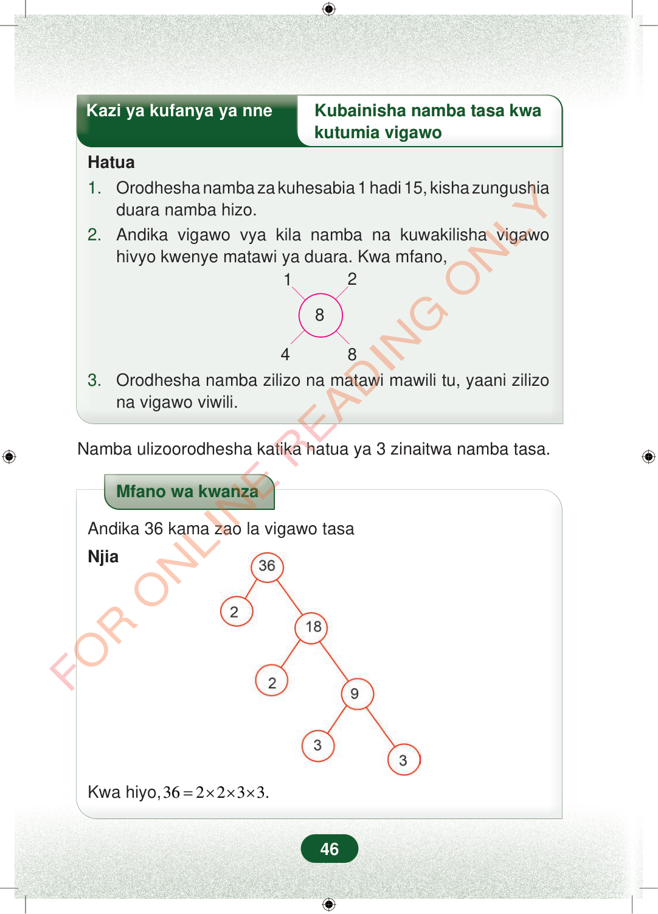

Kazi ya kufanya ya nneKubainisha namba tasa kwakutumia vigawoHatua1.Orodhesha namba za kuhesabia 1 hadi 15, kisha zungushiaduara namba hizo.2.Andika vigawo vya kila namba na kuwakilisha vigawohivyo kwenye matawi ya duara. Kwa mfano,128483.Orodhesha namba zilizo na matawi mawili tu, yaani zilizona vigawo viwili.Namba ulizoorodhesha katika hatua ya 3 zinaitwa namba tasa.Mfano wa kwanzaAndika 36 kama zao la vigawo tasaNjiaKwa hiyo,362233.=×××46
Kazi ya kufanya ya nne Kubainisha namba tasa kwa
kutumia vigawo
Hatua 1. Orodhesha namba za kuhesabia 1 hadi 15, kisha zungushia duara namba hizo. 2. Andika vigawo vya kila namba na kuwakilisha vigawo hivyo kwenye matawi ya duara. Kwa mfano,
1 2
8
4 8
3. Orodhesha namba zilizo na matawi mawili tu, yaani zilizo na vigawo viwili.
Namba ulizoorodhesha katika hatua ya 3 zinaitwa namba tasa.
Mfano wa kwanza
Andika 36 kama zao la vigawo tasa
Njia
Kwa hiyo, 36 2 2 3 3. = × × ×
46
Hatua za kubainisha namba tasa kwa kutumia vigawo. Mfano unaonyesha namba 8 katikati na vigawo 1, 2, 4 na 8 kwenye matawi yake.Kazi ya kufanya ya nneKubainisha namba tasa kwa kutumia vigawoHatua1.Orodhesha namba za kuhesabia 1 hadi 15, kisha zungushia duara namba hizo.2.Andika vigawo vya kila namba na kuwakilisha vigawo hivyo kwenye matawi ya duara.Kwa mfano,Mti wa vigawo wa 36 unaonyesha 36 ikigawanywa kuwa 2 na 18, kisha 18 kuwa 2 na 9, na 9 kuwa 3 na 3.3.Orodhesha namba zilizo na matawi mawili tu, yaani zilizo na vigawo viwili.Namba ulizoorodhesha katika hatua ya 3 zinaitwa namba tasa.Mfano wa kwanza wa kuandika 36 kama zao la vigawo tasa. Mti wa vigawo unaonyesha kuwa 36 = 2 × 2 × 3 × 3.Mfano wa kwanzaAndika 36 kama zao la vigawo tasaNjiaKwa hiyo, 36 = 2 × 2 × 3 × 3.